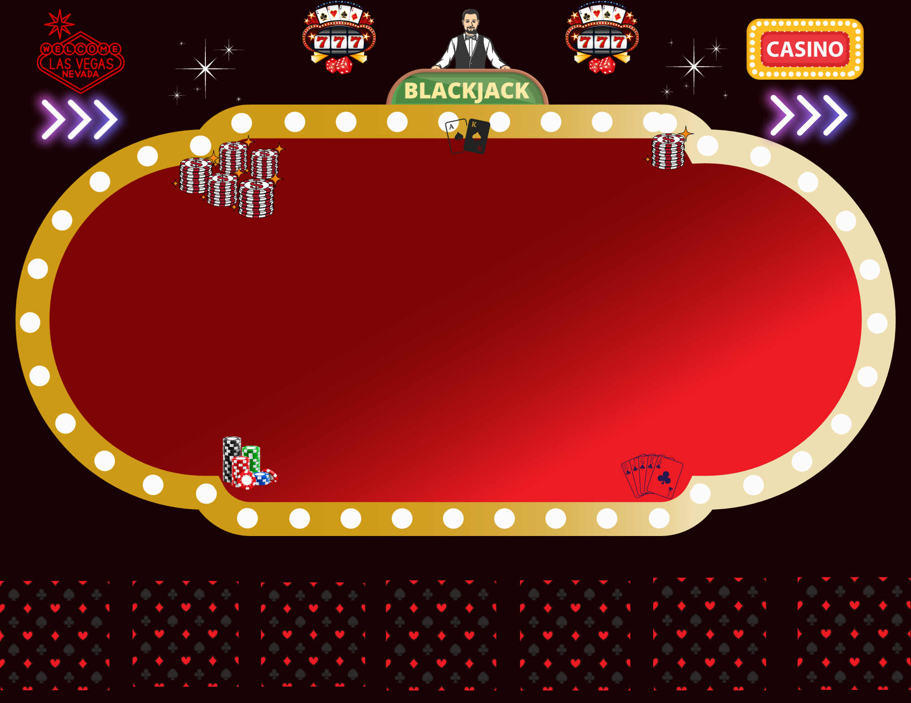
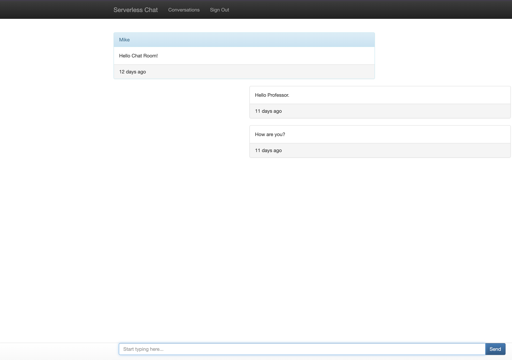
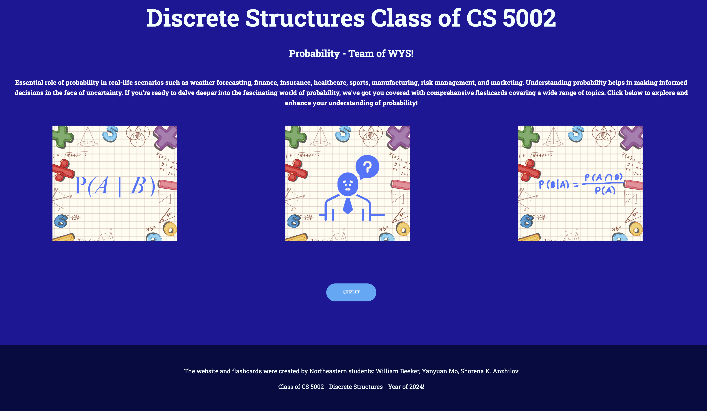

My Projects
A collection of AWS Cloud and Software Engineering projects showcasing
hands-on experience with cloud infrastructure, serverless applications,
and web development.
BlackJack AWS

Python and Flask BlackJack game deployed on AWS EC2. The application uses
HTML, CSS, JavaScript, Ajax, and Flask to create a one-player Blackjack game.
Technologies: Python, Flask, HTML, CSS, JavaScript, Ajax, AWS EC2
View on GitHub
AWS Serverless Chat Web App

Serverless chat application built using AWS cloud services, including S3,
Lambda, API Gateway, DynamoDB, Cognito, CloudFront, and IAM.
Technologies: AWS S3, Lambda, API Gateway, DynamoDB, Cognito, CloudFront,
JavaScript, AJAX
View on GitHub
FlashCards Probability

Educational website explaining probability concepts through Quizlet
flashcards. Hosted on AWS S3 and deployed using AWS CodePipeline for
continuous deployment.
Technologies: AWS S3, AWS CodePipeline, HTML, CSS, JavaScript
View on GitHub